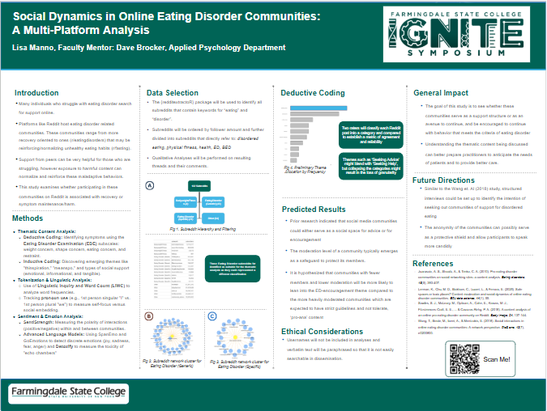

<!DOCTYPE html>
<html xmlns="http://www.w3.org/1999/xhtml" lang="en" xml:lang="en"><head>

<meta charset="utf-8">
<meta name="generator" content="quarto-1.6.33">

<meta name="viewport" content="width=device-width, initial-scale=1.0, user-scalable=yes">

<meta name="author" content="Lisa Manno">

<title>Social Dynamics in Online Eating Disorder Communities: A Multi-Platform Analysis – IGNITE Symposium Vol. 4</title>
<style>
code{white-space: pre-wrap;}
span.smallcaps{font-variant: small-caps;}
div.columns{display: flex; gap: min(4vw, 1.5em);}
div.column{flex: auto; overflow-x: auto;}
div.hanging-indent{margin-left: 1.5em; text-indent: -1.5em;}
ul.task-list{list-style: none;}
ul.task-list li input[type="checkbox"] {
  width: 0.8em;
  margin: 0 0.8em 0.2em -1em; /* quarto-specific, see https://github.com/quarto-dev/quarto-cli/issues/4556 */ 
  vertical-align: middle;
}
/* CSS for syntax highlighting */
pre > code.sourceCode { white-space: pre; position: relative; }
pre > code.sourceCode > span { line-height: 1.25; }
pre > code.sourceCode > span:empty { height: 1.2em; }
.sourceCode { overflow: visible; }
code.sourceCode > span { color: inherit; text-decoration: inherit; }
div.sourceCode { margin: 1em 0; }
pre.sourceCode { margin: 0; }
@media screen {
div.sourceCode { overflow: auto; }
}
@media print {
pre > code.sourceCode { white-space: pre-wrap; }
pre > code.sourceCode > span { display: inline-block; text-indent: -5em; padding-left: 5em; }
}
pre.numberSource code
  { counter-reset: source-line 0; }
pre.numberSource code > span
  { position: relative; left: -4em; counter-increment: source-line; }
pre.numberSource code > span > a:first-child::before
  { content: counter(source-line);
    position: relative; left: -1em; text-align: right; vertical-align: baseline;
    border: none; display: inline-block;
    -webkit-touch-callout: none; -webkit-user-select: none;
    -khtml-user-select: none; -moz-user-select: none;
    -ms-user-select: none; user-select: none;
    padding: 0 4px; width: 4em;
  }
pre.numberSource { margin-left: 3em;  padding-left: 4px; }
div.sourceCode
  {   }
@media screen {
pre > code.sourceCode > span > a:first-child::before { text-decoration: underline; }
}
</style>


<script src="site_libs/quarto-nav/quarto-nav.js"></script>
<script src="site_libs/quarto-nav/headroom.min.js"></script>
<script src="site_libs/clipboard/clipboard.min.js"></script>
<script src="site_libs/quarto-search/autocomplete.umd.js"></script>
<script src="site_libs/quarto-search/fuse.min.js"></script>
<script src="site_libs/quarto-search/quarto-search.js"></script>
<meta name="quarto:offset" content="./">
<script src="site_libs/quarto-html/quarto.js"></script>
<script src="site_libs/quarto-html/popper.min.js"></script>
<script src="site_libs/quarto-html/tippy.umd.min.js"></script>
<script src="site_libs/quarto-html/anchor.min.js"></script>
<link href="site_libs/quarto-html/tippy.css" rel="stylesheet">
<link href="site_libs/quarto-html/quarto-syntax-highlighting-07ba0ad10f5680c660e360ac31d2f3b6.css" rel="stylesheet" class="quarto-color-scheme" id="quarto-text-highlighting-styles">
<link href="site_libs/quarto-html/quarto-syntax-highlighting-dark-8b864f0777c60eecff11d75b6b2e1175.css" rel="prefetch" class="quarto-color-scheme quarto-color-alternate" id="quarto-text-highlighting-styles">
<script src="site_libs/bootstrap/bootstrap.min.js"></script>
<link href="site_libs/bootstrap/bootstrap-icons.css" rel="stylesheet">
<link href="site_libs/bootstrap/bootstrap-09e026eaf2cc604157e76dc7fb526ea0.min.css" rel="stylesheet" append-hash="true" class="quarto-color-scheme" id="quarto-bootstrap" data-mode="light">
<link href="site_libs/bootstrap/bootstrap-dark-1ca3e0674a0602a244ceba853400d2ef.min.css" rel="prefetch" append-hash="true" class="quarto-color-scheme quarto-color-alternate" id="quarto-bootstrap" data-mode="dark">
<script src="site_libs/quarto-contrib/glightbox/glightbox.min.js"></script>
<link href="site_libs/quarto-contrib/glightbox/glightbox.min.css" rel="stylesheet">
<link href="site_libs/quarto-contrib/glightbox/lightbox.css" rel="stylesheet">
<script id="quarto-search-options" type="application/json">{
  "location": "navbar",
  "copy-button": false,
  "collapse-after": 3,
  "panel-placement": "end",
  "type": "overlay",
  "limit": 50,
  "keyboard-shortcut": [
    "f",
    "/",
    "s"
  ],
  "show-item-context": false,
  "language": {
    "search-no-results-text": "No results",
    "search-matching-documents-text": "matching documents",
    "search-copy-link-title": "Copy link to search",
    "search-hide-matches-text": "Hide additional matches",
    "search-more-match-text": "more match in this document",
    "search-more-matches-text": "more matches in this document",
    "search-clear-button-title": "Clear",
    "search-text-placeholder": "",
    "search-detached-cancel-button-title": "Cancel",
    "search-submit-button-title": "Submit",
    "search-label": "Search"
  }
}</script>


<link rel="stylesheet" href="styles.css">
</head>

<body class="floating nav-fixed">

<div id="quarto-search-results"></div>
  <header id="quarto-header" class="headroom fixed-top">
    <nav class="navbar navbar-expand-lg " data-bs-theme="dark">
      <div class="navbar-container container-fluid">
      <div class="navbar-brand-container mx-auto">
    <a class="navbar-brand" href="./index.html">
    <span class="navbar-title">IGNITE Symposium Vol. 4</span>
    </a>
  </div>
            <div id="quarto-search" class="" title="Search"></div>
          <button class="navbar-toggler" type="button" data-bs-toggle="collapse" data-bs-target="#navbarCollapse" aria-controls="navbarCollapse" role="menu" aria-expanded="false" aria-label="Toggle navigation" onclick="if (window.quartoToggleHeadroom) { window.quartoToggleHeadroom(); }">
  <span class="navbar-toggler-icon"></span>
</button>
          <div class="collapse navbar-collapse" id="navbarCollapse">
            <ul class="navbar-nav navbar-nav-scroll me-auto">
  <li class="nav-item">
    <a class="nav-link" href="./gallery.html"> 
<span class="menu-text">IGNITE 2026</span></a>
  </li>  
</ul>
          </div> <!-- /navcollapse -->
            <div class="quarto-navbar-tools">
  <a href="" class="quarto-color-scheme-toggle quarto-navigation-tool  px-1" onclick="window.quartoToggleColorScheme(); return false;" title="Toggle dark mode"><i class="bi"></i></a>
</div>
      </div> <!-- /container-fluid -->
    </nav>
</header>
<!-- content -->
<div id="quarto-content" class="quarto-container page-columns page-rows-contents page-layout-article page-navbar">
<!-- sidebar -->
  <nav id="quarto-sidebar" class="sidebar collapse collapse-horizontal quarto-sidebar-collapse-item sidebar-navigation floating overflow-auto">
    <nav id="TOC" role="doc-toc" class="toc-active">
    <h2 id="toc-title">On this page</h2>
   
  <ul>
  <li><a href="#background" id="toc-background" class="nav-link active" data-scroll-target="#background">Background</a>
  <ul class="collapse">
  <li><a href="#theme-categorization" id="toc-theme-categorization" class="nav-link" data-scroll-target="#theme-categorization">Theme Categorization</a>
  <ul class="collapse">
  <li><a href="#seeking-advice" id="toc-seeking-advice" class="nav-link" data-scroll-target="#seeking-advice">Seeking Advice</a></li>
  <li><a href="#call-for-help" id="toc-call-for-help" class="nav-link" data-scroll-target="#call-for-help">Call for Help</a></li>
  <li><a href="#concern" id="toc-concern" class="nav-link" data-scroll-target="#concern">Concern</a></li>
  <li><a href="#preemptive-support" id="toc-preemptive-support" class="nav-link" data-scroll-target="#preemptive-support">Preemptive Support</a></li>
  <li><a href="#seeking-help" id="toc-seeking-help" class="nav-link" data-scroll-target="#seeking-help">Seeking Help</a></li>
  <li><a href="#seeking-support" id="toc-seeking-support" class="nav-link" data-scroll-target="#seeking-support">Seeking Support</a></li>
  <li><a href="#venting" id="toc-venting" class="nav-link" data-scroll-target="#venting">Venting</a></li>
  </ul></li>
  </ul></li>
  </ul>
</nav>
</nav>
<div id="quarto-sidebar-glass" class="quarto-sidebar-collapse-item" data-bs-toggle="collapse" data-bs-target=".quarto-sidebar-collapse-item"></div>
<!-- margin-sidebar -->
    <div id="quarto-margin-sidebar" class="sidebar margin-sidebar zindex-bottom">
    </div>
<!-- main -->
<main class="content" id="quarto-document-content">

<header id="title-block-header" class="quarto-title-block default">
<div class="quarto-title">
<div class="quarto-title-block"><div><h1 class="title">Social Dynamics in Online Eating Disorder Communities: A Multi-Platform Analysis</h1><button type="button" class="btn code-tools-button" id="quarto-code-tools-source"><i class="bi"></i> Code</button></div></div>
</div>


<div class="quarto-title-meta">

    <div>
    <div class="quarto-title-meta-heading">Author</div>
    <div class="quarto-title-meta-contents">
             <p>Lisa Manno </p>
          </div>
  </div>
    
  
    
  </div>
  


</header>


<section id="background" class="level1">
<h1>Background</h1>
<section id="theme-categorization" class="level2">
<h2 class="anchored" data-anchor-id="theme-categorization">Theme Categorization</h2>
<p>Themes were classified by two independent raters. The text contains information for both the title of the post and the post inside the thread content. This means that in some cases, the title is descriptive enough to lend itself to theming, however, the title can sometimes be non-descript and be more explanatory in the text.</p>
<div class="callout callout-style-default callout-note callout-titled">
<div class="callout-header d-flex align-content-center">
<div class="callout-icon-container">
<i class="callout-icon"></i>
</div>
<div class="callout-title-container flex-fill">
Note
</div>
</div>
<div class="callout-body-container callout-body">
<p>Full text has been truncated to avoid identification in searching attempts</p>
</div>
</div>
<section id="seeking-advice" class="level3">
<h3 class="anchored" data-anchor-id="seeking-advice">Seeking Advice</h3>
<blockquote class="blockquote">
<p>“Should I take time off from college to focus on my mental health and recovery?” [Title]</p>
<p>[No Thread Text]</p>
</blockquote>
</section>
<section id="call-for-help" class="level3">
<h3 class="anchored" data-anchor-id="call-for-help">Call for Help</h3>
<blockquote class="blockquote">
<p>“Trouble eating after not eating for long periods of time” [Title]</p>
<p>…I’m&nbsp;very&nbsp;hungry&nbsp;and&nbsp;so&nbsp;weak&nbsp;and&nbsp;feel&nbsp;like&nbsp;my&nbsp;body&nbsp;is&nbsp;slowly&nbsp;dying&nbsp;orsomething&nbsp;and&nbsp;I’ve&nbsp;tried&nbsp;to&nbsp;eat&nbsp;I’ve&nbsp;ate&nbsp;some&nbsp;food&nbsp;but&nbsp;the&nbsp;feeling&nbsp;is&nbsp;still&nbsp;there&nbsp;like&nbsp;there’s&nbsp;a&nbsp;pit&nbsp;in&nbsp;my&nbsp;stomach&nbsp;where&nbsp;all&nbsp;the&nbsp;food&nbsp;I&nbsp;skipped&nbsp;for&nbsp;the&nbsp;past&nbsp;couple&nbsp;of&nbsp;days&nbsp;is&nbsp;meant&nbsp;to&nbsp;be&nbsp;and&nbsp;it’s&nbsp;not going away…&nbsp;[Text]</p>
</blockquote>
</section>
<section id="concern" class="level3">
<h3 class="anchored" data-anchor-id="concern">Concern</h3>
<blockquote class="blockquote">
<p>“my sister needs help” [Title]</p>
<p>…She&nbsp;has&nbsp;a&nbsp;really&nbsp;bad&nbsp;eating&nbsp;habit,&nbsp;all&nbsp;she&nbsp;does&nbsp;is&nbsp;eat&nbsp;and&nbsp;talk&nbsp;about&nbsp;how&nbsp;hungry&nbsp;she&nbsp;is.&nbsp;She&nbsp;gained&nbsp;a&nbsp;lot&nbsp;of&nbsp;weight.&nbsp;She&nbsp;tells&nbsp;me&nbsp;she&nbsp;is&nbsp;always&nbsp;bored&nbsp;so&nbsp;she&nbsp;eats.&nbsp;Even&nbsp;if&nbsp;she&nbsp;ate&nbsp;something&nbsp;she&nbsp;would&nbsp;want&nbsp;to&nbsp;eat&nbsp;again.&nbsp;It&nbsp;really&nbsp;is&nbsp;heartbreaking&nbsp;to&nbsp;watch&nbsp;my&nbsp;younger&nbsp;sister&nbsp;just&nbsp;eat&nbsp;her&nbsp;boredom&nbsp;away.&nbsp;I&nbsp;try&nbsp;to&nbsp;have&nbsp;her&nbsp;do&nbsp;actives,&nbsp;like&nbsp;play&nbsp;outside&nbsp;or&nbsp;paint&nbsp;with&nbsp;me… [Text]</p>
</blockquote>
</section>
<section id="preemptive-support" class="level3">
<h3 class="anchored" data-anchor-id="preemptive-support">Preemptive Support</h3>
<blockquote class="blockquote">
<p>“How to I stop it early on?” [Title]</p>
<p>…In&nbsp;my&nbsp;case&nbsp;it’s&nbsp;not&nbsp;a&nbsp;way&nbsp;to&nbsp;regulate&nbsp;the&nbsp;way&nbsp;my&nbsp;body&nbsp;looks,&nbsp;I’d&nbsp;say&nbsp;it’s&nbsp;more&nbsp;that&nbsp;when&nbsp;I’m&nbsp;stressed&nbsp;or&nbsp;in&nbsp;a&nbsp;bad&nbsp;place,&nbsp;sometimes&nbsp;I’ll&nbsp;be&nbsp;unable&nbsp;to&nbsp;eat&nbsp;even&nbsp;though&nbsp;I’m&nbsp;extremely&nbsp;hungry.&nbsp;I’ve&nbsp;managed&nbsp;to&nbsp;keep&nbsp;it&nbsp;down&nbsp;before,&nbsp;but&nbsp;this&nbsp;week&nbsp;it&nbsp;really&nbsp;felt&nbsp;like&nbsp;shit,&nbsp;idk&nbsp;what&nbsp;to&nbsp;do.&nbsp;I&nbsp;guess&nbsp;the&nbsp;universal&nbsp;answer&nbsp;is&nbsp;to&nbsp;find&nbsp;better&nbsp;coping&nbsp;mechanisms,&nbsp;but&nbsp;concretely&nbsp;are&nbsp;there&nbsp;any&nbsp;tips&nbsp;of&nbsp;things&nbsp;I&nbsp;can&nbsp;do&nbsp;to&nbsp;keep&nbsp;it&nbsp;down&nbsp;and&nbsp;not&nbsp;get&nbsp;too&nbsp;far&nbsp;into&nbsp;it&nbsp;in&nbsp;the&nbsp;first&nbsp;place?… [Text]</p>
</blockquote>
</section>
<section id="seeking-help" class="level3">
<h3 class="anchored" data-anchor-id="seeking-help">Seeking Help</h3>
<blockquote class="blockquote">
<p>“How to go from low to high res? (harm reduction recovery, NOT anti-recovery)” [Title]</p>
<p>[No Thread Text]</p>
</blockquote>
</section>
<section id="seeking-support" class="level3">
<h3 class="anchored" data-anchor-id="seeking-support">Seeking Support</h3>
<blockquote class="blockquote">
<p>“Overweight after recovery: guilty and seeking advice” [Title]</p>
<p>…I&nbsp;developed&nbsp;a&nbsp;BED&nbsp;in&nbsp;middle&nbsp;school&nbsp;where&nbsp;i&nbsp;wouldn’t&nbsp;eat&nbsp;at&nbsp;school&nbsp;but&nbsp;go&nbsp;home&nbsp;and&nbsp;eat&nbsp;way&nbsp;too&nbsp;much&nbsp;in&nbsp;the&nbsp;span&nbsp;of&nbsp;30&nbsp;minutes&nbsp;before&nbsp;my&nbsp;other&nbsp;siblings&nbsp;came&nbsp;home.&nbsp;in&nbsp;high&nbsp;school,&nbsp;i&nbsp;shifted&nbsp;to&nbsp;a&nbsp;heavily&nbsp;restrictive&nbsp;diet&nbsp;on&nbsp;top&nbsp;of&nbsp;1.5&nbsp;hours&nbsp;at&nbsp;the&nbsp;gym&nbsp;6&nbsp;days/week.&nbsp;i&nbsp;lost&nbsp;a&nbsp;lot&nbsp;of&nbsp;weight.&nbsp;and&nbsp;i&nbsp;dont&nbsp;think&nbsp;that&nbsp;people&nbsp;who&nbsp;haven’t&nbsp;gone&nbsp;through&nbsp;this&nbsp;kind&nbsp;of&nbsp;thing&nbsp;realize&nbsp;how&nbsp;differently&nbsp;people&nbsp;treat&nbsp;you&nbsp;after&nbsp;and&nbsp;that&nbsp;still&nbsp;messes&nbsp;with&nbsp;me.&nbsp; after&nbsp;years&nbsp;of&nbsp;support&nbsp;from&nbsp;my&nbsp;friends&nbsp;and&nbsp;my&nbsp;current&nbsp;partner&nbsp;of&nbsp;four&nbsp;years,&nbsp;i&nbsp;slowly&nbsp;grew&nbsp;out&nbsp;of&nbsp;these&nbsp;habits.&nbsp;my&nbsp;relationship&nbsp;with&nbsp;food&nbsp;is&nbsp;still&nbsp;not&nbsp;great&nbsp;but&nbsp;it’s&nbsp;better&nbsp;than&nbsp;its&nbsp;ever&nbsp;been… [Text]</p>
</blockquote>
</section>
<section id="venting" class="level3">
<h3 class="anchored" data-anchor-id="venting">Venting</h3>
<blockquote class="blockquote">
<p>“Are these good signs for getting my period back?” <strong>[Title]</strong></p>
<p>…Here are some of the things ive noticed ive gotten in the past month or so: More discharge which fluctuates in texture Lower abdominal cramps occasionally Sore lower back occasionally Bloating in the morning occasionally (after meals too, but i think thats normal) … <strong>[Text</strong>]</p>
</blockquote>
<p><a href="LM_Post.PNG" class="lightbox" data-gallery="quarto-lightbox-gallery-1"></a></p>


<!-- -->

</section>
</section>
</section>

</main> <!-- /main -->
<script id="quarto-html-after-body" type="application/javascript">
window.document.addEventListener("DOMContentLoaded", function (event) {
  const toggleBodyColorMode = (bsSheetEl) => {
    const mode = bsSheetEl.getAttribute("data-mode");
    const bodyEl = window.document.querySelector("body");
    if (mode === "dark") {
      bodyEl.classList.add("quarto-dark");
      bodyEl.classList.remove("quarto-light");
    } else {
      bodyEl.classList.add("quarto-light");
      bodyEl.classList.remove("quarto-dark");
    }
  }
  const toggleBodyColorPrimary = () => {
    const bsSheetEl = window.document.querySelector("link#quarto-bootstrap");
    if (bsSheetEl) {
      toggleBodyColorMode(bsSheetEl);
    }
  }
  toggleBodyColorPrimary();  
  const disableStylesheet = (stylesheets) => {
    for (let i=0; i < stylesheets.length; i++) {
      const stylesheet = stylesheets[i];
      stylesheet.rel = 'prefetch';
    }
  }
  const enableStylesheet = (stylesheets) => {
    for (let i=0; i < stylesheets.length; i++) {
      const stylesheet = stylesheets[i];
      stylesheet.rel = 'stylesheet';
    }
  }
  const manageTransitions = (selector, allowTransitions) => {
    const els = window.document.querySelectorAll(selector);
    for (let i=0; i < els.length; i++) {
      const el = els[i];
      if (allowTransitions) {
        el.classList.remove('notransition');
      } else {
        el.classList.add('notransition');
      }
    }
  }
  const toggleGiscusIfUsed = (isAlternate, darkModeDefault) => {
    const baseTheme = document.querySelector('#giscus-base-theme')?.value ?? 'light';
    const alternateTheme = document.querySelector('#giscus-alt-theme')?.value ?? 'dark';
    let newTheme = '';
    if(darkModeDefault) {
      newTheme = isAlternate ? baseTheme : alternateTheme;
    } else {
      newTheme = isAlternate ? alternateTheme : baseTheme;
    }
    const changeGiscusTheme = () => {
      // From: https://github.com/giscus/giscus/issues/336
      const sendMessage = (message) => {
        const iframe = document.querySelector('iframe.giscus-frame');
        if (!iframe) return;
        iframe.contentWindow.postMessage({ giscus: message }, 'https://giscus.app');
      }
      sendMessage({
        setConfig: {
          theme: newTheme
        }
      });
    }
    const isGiscussLoaded = window.document.querySelector('iframe.giscus-frame') !== null;
    if (isGiscussLoaded) {
      changeGiscusTheme();
    }
  }
  const toggleColorMode = (alternate) => {
    // Switch the stylesheets
    const alternateStylesheets = window.document.querySelectorAll('link.quarto-color-scheme.quarto-color-alternate');
    manageTransitions('#quarto-margin-sidebar .nav-link', false);
    if (alternate) {
      enableStylesheet(alternateStylesheets);
      for (const sheetNode of alternateStylesheets) {
        if (sheetNode.id === "quarto-bootstrap") {
          toggleBodyColorMode(sheetNode);
        }
      }
    } else {
      disableStylesheet(alternateStylesheets);
      toggleBodyColorPrimary();
    }
    manageTransitions('#quarto-margin-sidebar .nav-link', true);
    // Switch the toggles
    const toggles = window.document.querySelectorAll('.quarto-color-scheme-toggle');
    for (let i=0; i < toggles.length; i++) {
      const toggle = toggles[i];
      if (toggle) {
        if (alternate) {
          toggle.classList.add("alternate");     
        } else {
          toggle.classList.remove("alternate");
        }
      }
    }
    // Hack to workaround the fact that safari doesn't
    // properly recolor the scrollbar when toggling (#1455)
    if (navigator.userAgent.indexOf('Safari') > 0 && navigator.userAgent.indexOf('Chrome') == -1) {
      manageTransitions("body", false);
      window.scrollTo(0, 1);
      setTimeout(() => {
        window.scrollTo(0, 0);
        manageTransitions("body", true);
      }, 40);  
    }
  }
  const isFileUrl = () => { 
    return window.location.protocol === 'file:';
  }
  const hasAlternateSentinel = () => {  
    let styleSentinel = getColorSchemeSentinel();
    if (styleSentinel !== null) {
      return styleSentinel === "alternate";
    } else {
      return false;
    }
  }
  const setStyleSentinel = (alternate) => {
    const value = alternate ? "alternate" : "default";
    if (!isFileUrl()) {
      window.localStorage.setItem("quarto-color-scheme", value);
    } else {
      localAlternateSentinel = value;
    }
  }
  const getColorSchemeSentinel = () => {
    if (!isFileUrl()) {
      const storageValue = window.localStorage.getItem("quarto-color-scheme");
      return storageValue != null ? storageValue : localAlternateSentinel;
    } else {
      return localAlternateSentinel;
    }
  }
  const darkModeDefault = false;
  let localAlternateSentinel = darkModeDefault ? 'alternate' : 'default';
  // Dark / light mode switch
  window.quartoToggleColorScheme = () => {
    // Read the current dark / light value 
    let toAlternate = !hasAlternateSentinel();
    toggleColorMode(toAlternate);
    setStyleSentinel(toAlternate);
    toggleGiscusIfUsed(toAlternate, darkModeDefault);
  };
  // Ensure there is a toggle, if there isn't float one in the top right
  if (window.document.querySelector('.quarto-color-scheme-toggle') === null) {
    const a = window.document.createElement('a');
    a.classList.add('top-right');
    a.classList.add('quarto-color-scheme-toggle');
    a.href = "";
    a.onclick = function() { try { window.quartoToggleColorScheme(); } catch {} return false; };
    const i = window.document.createElement("i");
    i.classList.add('bi');
    a.appendChild(i);
    window.document.body.appendChild(a);
  }
  // Switch to dark mode if need be
  if (hasAlternateSentinel()) {
    toggleColorMode(true);
  } else {
    toggleColorMode(false);
  }
  const icon = "";
  const anchorJS = new window.AnchorJS();
  anchorJS.options = {
    placement: 'right',
    icon: icon
  };
  anchorJS.add('.anchored');
  const isCodeAnnotation = (el) => {
    for (const clz of el.classList) {
      if (clz.startsWith('code-annotation-')) {                     
        return true;
      }
    }
    return false;
  }
  const onCopySuccess = function(e) {
    // button target
    const button = e.trigger;
    // don't keep focus
    button.blur();
    // flash "checked"
    button.classList.add('code-copy-button-checked');
    var currentTitle = button.getAttribute("title");
    button.setAttribute("title", "Copied!");
    let tooltip;
    if (window.bootstrap) {
      button.setAttribute("data-bs-toggle", "tooltip");
      button.setAttribute("data-bs-placement", "left");
      button.setAttribute("data-bs-title", "Copied!");
      tooltip = new bootstrap.Tooltip(button, 
        { trigger: "manual", 
          customClass: "code-copy-button-tooltip",
          offset: [0, -8]});
      tooltip.show();    
    }
    setTimeout(function() {
      if (tooltip) {
        tooltip.hide();
        button.removeAttribute("data-bs-title");
        button.removeAttribute("data-bs-toggle");
        button.removeAttribute("data-bs-placement");
      }
      button.setAttribute("title", currentTitle);
      button.classList.remove('code-copy-button-checked');
    }, 1000);
    // clear code selection
    e.clearSelection();
  }
  const getTextToCopy = function(trigger) {
      const codeEl = trigger.previousElementSibling.cloneNode(true);
      for (const childEl of codeEl.children) {
        if (isCodeAnnotation(childEl)) {
          childEl.remove();
        }
      }
      return codeEl.innerText;
  }
  const clipboard = new window.ClipboardJS('.code-copy-button:not([data-in-quarto-modal])', {
    text: getTextToCopy
  });
  clipboard.on('success', onCopySuccess);
  if (window.document.getElementById('quarto-embedded-source-code-modal')) {
    // For code content inside modals, clipBoardJS needs to be initialized with a container option
    // TODO: Check when it could be a function (https://github.com/zenorocha/clipboard.js/issues/860)
    const clipboardModal = new window.ClipboardJS('.code-copy-button[data-in-quarto-modal]', {
      text: getTextToCopy,
      container: window.document.getElementById('quarto-embedded-source-code-modal')
    });
    clipboardModal.on('success', onCopySuccess);
  }
  const viewSource = window.document.getElementById('quarto-view-source') ||
                     window.document.getElementById('quarto-code-tools-source');
  if (viewSource) {
    const sourceUrl = viewSource.getAttribute("data-quarto-source-url");
    viewSource.addEventListener("click", function(e) {
      if (sourceUrl) {
        // rstudio viewer pane
        if (/\bcapabilities=\b/.test(window.location)) {
          window.open(sourceUrl);
        } else {
          window.location.href = sourceUrl;
        }
      } else {
        const modal = new bootstrap.Modal(document.getElementById('quarto-embedded-source-code-modal'));
        modal.show();
      }
      return false;
    });
  }
  function toggleCodeHandler(show) {
    return function(e) {
      const detailsSrc = window.document.querySelectorAll(".cell > details > .sourceCode");
      for (let i=0; i<detailsSrc.length; i++) {
        const details = detailsSrc[i].parentElement;
        if (show) {
          details.open = true;
        } else {
          details.removeAttribute("open");
        }
      }
      const cellCodeDivs = window.document.querySelectorAll(".cell > .sourceCode");
      const fromCls = show ? "hidden" : "unhidden";
      const toCls = show ? "unhidden" : "hidden";
      for (let i=0; i<cellCodeDivs.length; i++) {
        const codeDiv = cellCodeDivs[i];
        if (codeDiv.classList.contains(fromCls)) {
          codeDiv.classList.remove(fromCls);
          codeDiv.classList.add(toCls);
        } 
      }
      return false;
    }
  }
  const hideAllCode = window.document.getElementById("quarto-hide-all-code");
  if (hideAllCode) {
    hideAllCode.addEventListener("click", toggleCodeHandler(false));
  }
  const showAllCode = window.document.getElementById("quarto-show-all-code");
  if (showAllCode) {
    showAllCode.addEventListener("click", toggleCodeHandler(true));
  }
    var localhostRegex = new RegExp(/^(?:http|https):\/\/localhost\:?[0-9]*\//);
    var mailtoRegex = new RegExp(/^mailto:/);
      var filterRegex = new RegExp('/' + window.location.host + '/');
    var isInternal = (href) => {
        return filterRegex.test(href) || localhostRegex.test(href) || mailtoRegex.test(href);
    }
    // Inspect non-navigation links and adorn them if external
 	var links = window.document.querySelectorAll('a[href]:not(.nav-link):not(.navbar-brand):not(.toc-action):not(.sidebar-link):not(.sidebar-item-toggle):not(.pagination-link):not(.no-external):not([aria-hidden]):not(.dropdown-item):not(.quarto-navigation-tool):not(.about-link)');
    for (var i=0; i<links.length; i++) {
      const link = links[i];
      if (!isInternal(link.href)) {
        // undo the damage that might have been done by quarto-nav.js in the case of
        // links that we want to consider external
        if (link.dataset.originalHref !== undefined) {
          link.href = link.dataset.originalHref;
        }
      }
    }
  function tippyHover(el, contentFn, onTriggerFn, onUntriggerFn) {
    const config = {
      allowHTML: true,
      maxWidth: 500,
      delay: 100,
      arrow: false,
      appendTo: function(el) {
          return el.parentElement;
      },
      interactive: true,
      interactiveBorder: 10,
      theme: 'quarto',
      placement: 'bottom-start',
    };
    if (contentFn) {
      config.content = contentFn;
    }
    if (onTriggerFn) {
      config.onTrigger = onTriggerFn;
    }
    if (onUntriggerFn) {
      config.onUntrigger = onUntriggerFn;
    }
    window.tippy(el, config); 
  }
  const noterefs = window.document.querySelectorAll('a[role="doc-noteref"]');
  for (var i=0; i<noterefs.length; i++) {
    const ref = noterefs[i];
    tippyHover(ref, function() {
      // use id or data attribute instead here
      let href = ref.getAttribute('data-footnote-href') || ref.getAttribute('href');
      try { href = new URL(href).hash; } catch {}
      const id = href.replace(/^#\/?/, "");
      const note = window.document.getElementById(id);
      if (note) {
        return note.innerHTML;
      } else {
        return "";
      }
    });
  }
  const xrefs = window.document.querySelectorAll('a.quarto-xref');
  const processXRef = (id, note) => {
    // Strip column container classes
    const stripColumnClz = (el) => {
      el.classList.remove("page-full", "page-columns");
      if (el.children) {
        for (const child of el.children) {
          stripColumnClz(child);
        }
      }
    }
    stripColumnClz(note)
    if (id === null || id.startsWith('sec-')) {
      // Special case sections, only their first couple elements
      const container = document.createElement("div");
      if (note.children && note.children.length > 2) {
        container.appendChild(note.children[0].cloneNode(true));
        for (let i = 1; i < note.children.length; i++) {
          const child = note.children[i];
          if (child.tagName === "P" && child.innerText === "") {
            continue;
          } else {
            container.appendChild(child.cloneNode(true));
            break;
          }
        }
        if (window.Quarto?.typesetMath) {
          window.Quarto.typesetMath(container);
        }
        return container.innerHTML
      } else {
        if (window.Quarto?.typesetMath) {
          window.Quarto.typesetMath(note);
        }
        return note.innerHTML;
      }
    } else {
      // Remove any anchor links if they are present
      const anchorLink = note.querySelector('a.anchorjs-link');
      if (anchorLink) {
        anchorLink.remove();
      }
      if (window.Quarto?.typesetMath) {
        window.Quarto.typesetMath(note);
      }
      // TODO in 1.5, we should make sure this works without a callout special case
      if (note.classList.contains("callout")) {
        return note.outerHTML;
      } else {
        return note.innerHTML;
      }
    }
  }
  for (var i=0; i<xrefs.length; i++) {
    const xref = xrefs[i];
    tippyHover(xref, undefined, function(instance) {
      instance.disable();
      let url = xref.getAttribute('href');
      let hash = undefined; 
      if (url.startsWith('#')) {
        hash = url;
      } else {
        try { hash = new URL(url).hash; } catch {}
      }
      if (hash) {
        const id = hash.replace(/^#\/?/, "");
        const note = window.document.getElementById(id);
        if (note !== null) {
          try {
            const html = processXRef(id, note.cloneNode(true));
            instance.setContent(html);
          } finally {
            instance.enable();
            instance.show();
          }
        } else {
          // See if we can fetch this
          fetch(url.split('#')[0])
          .then(res => res.text())
          .then(html => {
            const parser = new DOMParser();
            const htmlDoc = parser.parseFromString(html, "text/html");
            const note = htmlDoc.getElementById(id);
            if (note !== null) {
              const html = processXRef(id, note);
              instance.setContent(html);
            } 
          }).finally(() => {
            instance.enable();
            instance.show();
          });
        }
      } else {
        // See if we can fetch a full url (with no hash to target)
        // This is a special case and we should probably do some content thinning / targeting
        fetch(url)
        .then(res => res.text())
        .then(html => {
          const parser = new DOMParser();
          const htmlDoc = parser.parseFromString(html, "text/html");
          const note = htmlDoc.querySelector('main.content');
          if (note !== null) {
            // This should only happen for chapter cross references
            // (since there is no id in the URL)
            // remove the first header
            if (note.children.length > 0 && note.children[0].tagName === "HEADER") {
              note.children[0].remove();
            }
            const html = processXRef(null, note);
            instance.setContent(html);
          } 
        }).finally(() => {
          instance.enable();
          instance.show();
        });
      }
    }, function(instance) {
    });
  }
      let selectedAnnoteEl;
      const selectorForAnnotation = ( cell, annotation) => {
        let cellAttr = 'data-code-cell="' + cell + '"';
        let lineAttr = 'data-code-annotation="' +  annotation + '"';
        const selector = 'span[' + cellAttr + '][' + lineAttr + ']';
        return selector;
      }
      const selectCodeLines = (annoteEl) => {
        const doc = window.document;
        const targetCell = annoteEl.getAttribute("data-target-cell");
        const targetAnnotation = annoteEl.getAttribute("data-target-annotation");
        const annoteSpan = window.document.querySelector(selectorForAnnotation(targetCell, targetAnnotation));
        const lines = annoteSpan.getAttribute("data-code-lines").split(",");
        const lineIds = lines.map((line) => {
          return targetCell + "-" + line;
        })
        let top = null;
        let height = null;
        let parent = null;
        if (lineIds.length > 0) {
            //compute the position of the single el (top and bottom and make a div)
            const el = window.document.getElementById(lineIds[0]);
            top = el.offsetTop;
            height = el.offsetHeight;
            parent = el.parentElement.parentElement;
          if (lineIds.length > 1) {
            const lastEl = window.document.getElementById(lineIds[lineIds.length - 1]);
            const bottom = lastEl.offsetTop + lastEl.offsetHeight;
            height = bottom - top;
          }
          if (top !== null && height !== null && parent !== null) {
            // cook up a div (if necessary) and position it 
            let div = window.document.getElementById("code-annotation-line-highlight");
            if (div === null) {
              div = window.document.createElement("div");
              div.setAttribute("id", "code-annotation-line-highlight");
              div.style.position = 'absolute';
              parent.appendChild(div);
            }
            div.style.top = top - 2 + "px";
            div.style.height = height + 4 + "px";
            div.style.left = 0;
            let gutterDiv = window.document.getElementById("code-annotation-line-highlight-gutter");
            if (gutterDiv === null) {
              gutterDiv = window.document.createElement("div");
              gutterDiv.setAttribute("id", "code-annotation-line-highlight-gutter");
              gutterDiv.style.position = 'absolute';
              const codeCell = window.document.getElementById(targetCell);
              const gutter = codeCell.querySelector('.code-annotation-gutter');
              gutter.appendChild(gutterDiv);
            }
            gutterDiv.style.top = top - 2 + "px";
            gutterDiv.style.height = height + 4 + "px";
          }
          selectedAnnoteEl = annoteEl;
        }
      };
      const unselectCodeLines = () => {
        const elementsIds = ["code-annotation-line-highlight", "code-annotation-line-highlight-gutter"];
        elementsIds.forEach((elId) => {
          const div = window.document.getElementById(elId);
          if (div) {
            div.remove();
          }
        });
        selectedAnnoteEl = undefined;
      };
        // Handle positioning of the toggle
    window.addEventListener(
      "resize",
      throttle(() => {
        elRect = undefined;
        if (selectedAnnoteEl) {
          selectCodeLines(selectedAnnoteEl);
        }
      }, 10)
    );
    function throttle(fn, ms) {
    let throttle = false;
    let timer;
      return (...args) => {
        if(!throttle) { // first call gets through
            fn.apply(this, args);
            throttle = true;
        } else { // all the others get throttled
            if(timer) clearTimeout(timer); // cancel #2
            timer = setTimeout(() => {
              fn.apply(this, args);
              timer = throttle = false;
            }, ms);
        }
      };
    }
      // Attach click handler to the DT
      const annoteDls = window.document.querySelectorAll('dt[data-target-cell]');
      for (const annoteDlNode of annoteDls) {
        annoteDlNode.addEventListener('click', (event) => {
          const clickedEl = event.target;
          if (clickedEl !== selectedAnnoteEl) {
            unselectCodeLines();
            const activeEl = window.document.querySelector('dt[data-target-cell].code-annotation-active');
            if (activeEl) {
              activeEl.classList.remove('code-annotation-active');
            }
            selectCodeLines(clickedEl);
            clickedEl.classList.add('code-annotation-active');
          } else {
            // Unselect the line
            unselectCodeLines();
            clickedEl.classList.remove('code-annotation-active');
          }
        });
      }
  const findCites = (el) => {
    const parentEl = el.parentElement;
    if (parentEl) {
      const cites = parentEl.dataset.cites;
      if (cites) {
        return {
          el,
          cites: cites.split(' ')
        };
      } else {
        return findCites(el.parentElement)
      }
    } else {
      return undefined;
    }
  };
  var bibliorefs = window.document.querySelectorAll('a[role="doc-biblioref"]');
  for (var i=0; i<bibliorefs.length; i++) {
    const ref = bibliorefs[i];
    const citeInfo = findCites(ref);
    if (citeInfo) {
      tippyHover(citeInfo.el, function() {
        var popup = window.document.createElement('div');
        citeInfo.cites.forEach(function(cite) {
          var citeDiv = window.document.createElement('div');
          citeDiv.classList.add('hanging-indent');
          citeDiv.classList.add('csl-entry');
          var biblioDiv = window.document.getElementById('ref-' + cite);
          if (biblioDiv) {
            citeDiv.innerHTML = biblioDiv.innerHTML;
          }
          popup.appendChild(citeDiv);
        });
        return popup.innerHTML;
      });
    }
  }
});
</script><div class="modal fade" id="quarto-embedded-source-code-modal" tabindex="-1" aria-labelledby="quarto-embedded-source-code-modal-label" aria-hidden="true"><div class="modal-dialog modal-dialog-scrollable"><div class="modal-content"><div class="modal-header"><h5 class="modal-title" id="quarto-embedded-source-code-modal-label">Source Code</h5><button class="btn-close" data-bs-dismiss="modal"></button></div><div class="modal-body"><div class="">
<div class="sourceCode" id="cb1" data-shortcodes="false"><pre class="sourceCode markdown code-with-copy"><code class="sourceCode markdown"><span id="cb1-1"><a href="#cb1-1" aria-hidden="true" tabindex="-1"></a><span class="co">---</span></span>
<span id="cb1-2"><a href="#cb1-2" aria-hidden="true" tabindex="-1"></a><span class="an">title:</span><span class="co"> "Social Dynamics in Online Eating Disorder Communities: </span></span>
<span id="cb1-3"><a href="#cb1-3" aria-hidden="true" tabindex="-1"></a><span class="co">A Multi-Platform Analysis"</span></span>
<span id="cb1-4"><a href="#cb1-4" aria-hidden="true" tabindex="-1"></a><span class="an">author:</span><span class="co"> "Lisa Manno"</span></span>
<span id="cb1-5"><a href="#cb1-5" aria-hidden="true" tabindex="-1"></a><span class="an">format:</span><span class="co"> </span></span>
<span id="cb1-6"><a href="#cb1-6" aria-hidden="true" tabindex="-1"></a><span class="co">  html:</span></span>
<span id="cb1-7"><a href="#cb1-7" aria-hidden="true" tabindex="-1"></a><span class="co">    lightbox: true</span></span>
<span id="cb1-8"><a href="#cb1-8" aria-hidden="true" tabindex="-1"></a><span class="co">    code-fold: true</span></span>
<span id="cb1-9"><a href="#cb1-9" aria-hidden="true" tabindex="-1"></a><span class="an">editor:</span><span class="co"> visual</span></span>
<span id="cb1-10"><a href="#cb1-10" aria-hidden="true" tabindex="-1"></a><span class="co">---</span></span>
<span id="cb1-11"><a href="#cb1-11" aria-hidden="true" tabindex="-1"></a></span>
<span id="cb1-12"><a href="#cb1-12" aria-hidden="true" tabindex="-1"></a><span class="fu"># Background</span></span>
<span id="cb1-13"><a href="#cb1-13" aria-hidden="true" tabindex="-1"></a></span>
<span id="cb1-14"><a href="#cb1-14" aria-hidden="true" tabindex="-1"></a><span class="fu">## Theme Categorization</span></span>
<span id="cb1-15"><a href="#cb1-15" aria-hidden="true" tabindex="-1"></a></span>
<span id="cb1-16"><a href="#cb1-16" aria-hidden="true" tabindex="-1"></a>Themes were classified by two independent raters. The text contains information for both the title of the post and the post inside the thread content. This means that in some cases, the title is descriptive enough to lend itself to theming, however, the title can sometimes be non-descript and be more explanatory in the text.</span>
<span id="cb1-17"><a href="#cb1-17" aria-hidden="true" tabindex="-1"></a></span>
<span id="cb1-18"><a href="#cb1-18" aria-hidden="true" tabindex="-1"></a>::: callout-note</span>
<span id="cb1-19"><a href="#cb1-19" aria-hidden="true" tabindex="-1"></a>Full text has been truncated to avoid identification in searching attempts</span>
<span id="cb1-20"><a href="#cb1-20" aria-hidden="true" tabindex="-1"></a>:::</span>
<span id="cb1-21"><a href="#cb1-21" aria-hidden="true" tabindex="-1"></a></span>
<span id="cb1-22"><a href="#cb1-22" aria-hidden="true" tabindex="-1"></a><span class="fu">### Seeking Advice</span></span>
<span id="cb1-23"><a href="#cb1-23" aria-hidden="true" tabindex="-1"></a></span>
<span id="cb1-24"><a href="#cb1-24" aria-hidden="true" tabindex="-1"></a><span class="at">&gt; "Should I take time off from college to focus on my mental health and recovery?" </span><span class="sc">\[</span><span class="at">Title</span><span class="sc">\]</span></span>
<span id="cb1-25"><a href="#cb1-25" aria-hidden="true" tabindex="-1"></a><span class="at">&gt;</span></span>
<span id="cb1-26"><a href="#cb1-26" aria-hidden="true" tabindex="-1"></a><span class="at">&gt; </span><span class="sc">\[</span><span class="at">No Thread Text</span><span class="sc">\]</span></span>
<span id="cb1-27"><a href="#cb1-27" aria-hidden="true" tabindex="-1"></a></span>
<span id="cb1-28"><a href="#cb1-28" aria-hidden="true" tabindex="-1"></a><span class="fu">### Call for Help</span></span>
<span id="cb1-29"><a href="#cb1-29" aria-hidden="true" tabindex="-1"></a></span>
<span id="cb1-30"><a href="#cb1-30" aria-hidden="true" tabindex="-1"></a><span class="at">&gt; "Trouble eating after not eating for long periods of time" </span><span class="sc">\[</span><span class="at">Title</span><span class="sc">\]</span></span>
<span id="cb1-31"><a href="#cb1-31" aria-hidden="true" tabindex="-1"></a><span class="at">&gt;</span></span>
<span id="cb1-32"><a href="#cb1-32" aria-hidden="true" tabindex="-1"></a><span class="at">&gt; ...I'm&nbsp;very&nbsp;hungry&nbsp;and&nbsp;so&nbsp;weak&nbsp;and&nbsp;feel&nbsp;like&nbsp;my&nbsp;body&nbsp;is&nbsp;slowly&nbsp;dying&nbsp;orsomething&nbsp;and&nbsp;I've&nbsp;tried&nbsp;to&nbsp;eat&nbsp;I've&nbsp;ate&nbsp;some&nbsp;food&nbsp;but&nbsp;the&nbsp;feeling&nbsp;is&nbsp;still&nbsp;there&nbsp;like&nbsp;there's&nbsp;a&nbsp;pit&nbsp;in&nbsp;my&nbsp;stomach&nbsp;where&nbsp;all&nbsp;the&nbsp;food&nbsp;I&nbsp;skipped&nbsp;for&nbsp;the&nbsp;past&nbsp;couple&nbsp;of&nbsp;days&nbsp;is&nbsp;meant&nbsp;to&nbsp;be&nbsp;and&nbsp;it's&nbsp;not going away...&nbsp;</span><span class="sc">\[</span><span class="at">Text</span><span class="sc">\]</span></span>
<span id="cb1-33"><a href="#cb1-33" aria-hidden="true" tabindex="-1"></a></span>
<span id="cb1-34"><a href="#cb1-34" aria-hidden="true" tabindex="-1"></a><span class="fu">### Concern</span></span>
<span id="cb1-35"><a href="#cb1-35" aria-hidden="true" tabindex="-1"></a></span>
<span id="cb1-36"><a href="#cb1-36" aria-hidden="true" tabindex="-1"></a><span class="at">&gt; "my sister needs help" </span><span class="sc">\[</span><span class="at">Title</span><span class="sc">\]</span></span>
<span id="cb1-37"><a href="#cb1-37" aria-hidden="true" tabindex="-1"></a><span class="at">&gt;</span></span>
<span id="cb1-38"><a href="#cb1-38" aria-hidden="true" tabindex="-1"></a><span class="at">&gt; ...She&nbsp;has&nbsp;a&nbsp;really&nbsp;bad&nbsp;eating&nbsp;habit,&nbsp;all&nbsp;she&nbsp;does&nbsp;is&nbsp;eat&nbsp;and&nbsp;talk&nbsp;about&nbsp;how&nbsp;hungry&nbsp;she&nbsp;is.&nbsp;She&nbsp;gained&nbsp;a&nbsp;lot&nbsp;of&nbsp;weight.&nbsp;She&nbsp;tells&nbsp;me&nbsp;she&nbsp;is&nbsp;always&nbsp;bored&nbsp;so&nbsp;she&nbsp;eats.&nbsp;Even&nbsp;if&nbsp;she&nbsp;ate&nbsp;something&nbsp;she&nbsp;would&nbsp;want&nbsp;to&nbsp;eat&nbsp;again.&nbsp;It&nbsp;really&nbsp;is&nbsp;heartbreaking&nbsp;to&nbsp;watch&nbsp;my&nbsp;younger&nbsp;sister&nbsp;just&nbsp;eat&nbsp;her&nbsp;boredom&nbsp;away.&nbsp;I&nbsp;try&nbsp;to&nbsp;have&nbsp;her&nbsp;do&nbsp;actives,&nbsp;like&nbsp;play&nbsp;outside&nbsp;or&nbsp;paint&nbsp;with&nbsp;me... </span><span class="sc">\[</span><span class="at">Text</span><span class="sc">\]</span></span>
<span id="cb1-39"><a href="#cb1-39" aria-hidden="true" tabindex="-1"></a></span>
<span id="cb1-40"><a href="#cb1-40" aria-hidden="true" tabindex="-1"></a><span class="fu">### Preemptive Support</span></span>
<span id="cb1-41"><a href="#cb1-41" aria-hidden="true" tabindex="-1"></a></span>
<span id="cb1-42"><a href="#cb1-42" aria-hidden="true" tabindex="-1"></a><span class="at">&gt; "How to I stop it early on?" </span><span class="sc">\[</span><span class="at">Title</span><span class="sc">\]</span></span>
<span id="cb1-43"><a href="#cb1-43" aria-hidden="true" tabindex="-1"></a><span class="at">&gt;</span></span>
<span id="cb1-44"><a href="#cb1-44" aria-hidden="true" tabindex="-1"></a><span class="at">&gt; ...In&nbsp;my&nbsp;case&nbsp;it's&nbsp;not&nbsp;a&nbsp;way&nbsp;to&nbsp;regulate&nbsp;the&nbsp;way&nbsp;my&nbsp;body&nbsp;looks,&nbsp;I'd&nbsp;say&nbsp;it's&nbsp;more&nbsp;that&nbsp;when&nbsp;I'm&nbsp;stressed&nbsp;or&nbsp;in&nbsp;a&nbsp;bad&nbsp;place,&nbsp;sometimes&nbsp;I'll&nbsp;be&nbsp;unable&nbsp;to&nbsp;eat&nbsp;even&nbsp;though&nbsp;I'm&nbsp;extremely&nbsp;hungry.&nbsp;I've&nbsp;managed&nbsp;to&nbsp;keep&nbsp;it&nbsp;down&nbsp;before,&nbsp;but&nbsp;this&nbsp;week&nbsp;it&nbsp;really&nbsp;felt&nbsp;like&nbsp;shit,&nbsp;idk&nbsp;what&nbsp;to&nbsp;do.&nbsp;I&nbsp;guess&nbsp;the&nbsp;universal&nbsp;answer&nbsp;is&nbsp;to&nbsp;find&nbsp;better&nbsp;coping&nbsp;mechanisms,&nbsp;but&nbsp;concretely&nbsp;are&nbsp;there&nbsp;any&nbsp;tips&nbsp;of&nbsp;things&nbsp;I&nbsp;can&nbsp;do&nbsp;to&nbsp;keep&nbsp;it&nbsp;down&nbsp;and&nbsp;not&nbsp;get&nbsp;too&nbsp;far&nbsp;into&nbsp;it&nbsp;in&nbsp;the&nbsp;first&nbsp;place?... </span><span class="sc">\[</span><span class="at">Text</span><span class="sc">\]</span></span>
<span id="cb1-45"><a href="#cb1-45" aria-hidden="true" tabindex="-1"></a></span>
<span id="cb1-46"><a href="#cb1-46" aria-hidden="true" tabindex="-1"></a><span class="fu">### Seeking Help</span></span>
<span id="cb1-47"><a href="#cb1-47" aria-hidden="true" tabindex="-1"></a></span>
<span id="cb1-48"><a href="#cb1-48" aria-hidden="true" tabindex="-1"></a><span class="at">&gt; "How to go from low to high res? (harm reduction recovery, NOT anti-recovery)" </span><span class="sc">\[</span><span class="at">Title</span><span class="sc">\]</span></span>
<span id="cb1-49"><a href="#cb1-49" aria-hidden="true" tabindex="-1"></a><span class="at">&gt;</span></span>
<span id="cb1-50"><a href="#cb1-50" aria-hidden="true" tabindex="-1"></a><span class="at">&gt; </span><span class="sc">\[</span><span class="at">No Thread Text</span><span class="sc">\]</span></span>
<span id="cb1-51"><a href="#cb1-51" aria-hidden="true" tabindex="-1"></a></span>
<span id="cb1-52"><a href="#cb1-52" aria-hidden="true" tabindex="-1"></a><span class="fu">### Seeking Support</span></span>
<span id="cb1-53"><a href="#cb1-53" aria-hidden="true" tabindex="-1"></a></span>
<span id="cb1-54"><a href="#cb1-54" aria-hidden="true" tabindex="-1"></a><span class="at">&gt; "Overweight after recovery: guilty and seeking advice" </span><span class="sc">\[</span><span class="at">Title</span><span class="sc">\]</span></span>
<span id="cb1-55"><a href="#cb1-55" aria-hidden="true" tabindex="-1"></a><span class="at">&gt;</span></span>
<span id="cb1-56"><a href="#cb1-56" aria-hidden="true" tabindex="-1"></a><span class="at">&gt; ...I&nbsp;developed&nbsp;a&nbsp;BED&nbsp;in&nbsp;middle&nbsp;school&nbsp;where&nbsp;i&nbsp;wouldn't&nbsp;eat&nbsp;at&nbsp;school&nbsp;but&nbsp;go&nbsp;home&nbsp;and&nbsp;eat&nbsp;way&nbsp;too&nbsp;much&nbsp;in&nbsp;the&nbsp;span&nbsp;of&nbsp;30&nbsp;minutes&nbsp;before&nbsp;my&nbsp;other&nbsp;siblings&nbsp;came&nbsp;home.&nbsp;in&nbsp;high&nbsp;school,&nbsp;i&nbsp;shifted&nbsp;to&nbsp;a&nbsp;heavily&nbsp;restrictive&nbsp;diet&nbsp;on&nbsp;top&nbsp;of&nbsp;1.5&nbsp;hours&nbsp;at&nbsp;the&nbsp;gym&nbsp;6&nbsp;days/week.&nbsp;i&nbsp;lost&nbsp;a&nbsp;lot&nbsp;of&nbsp;weight.&nbsp;and&nbsp;i&nbsp;dont&nbsp;think&nbsp;that&nbsp;people&nbsp;who&nbsp;haven't&nbsp;gone&nbsp;through&nbsp;this&nbsp;kind&nbsp;of&nbsp;thing&nbsp;realize&nbsp;how&nbsp;differently&nbsp;people&nbsp;treat&nbsp;you&nbsp;after&nbsp;and&nbsp;that&nbsp;still&nbsp;messes&nbsp;with&nbsp;me.&nbsp; after&nbsp;years&nbsp;of&nbsp;support&nbsp;from&nbsp;my&nbsp;friends&nbsp;and&nbsp;my&nbsp;current&nbsp;partner&nbsp;of&nbsp;four&nbsp;years,&nbsp;i&nbsp;slowly&nbsp;grew&nbsp;out&nbsp;of&nbsp;these&nbsp;habits.&nbsp;my&nbsp;relationship&nbsp;with&nbsp;food&nbsp;is&nbsp;still&nbsp;not&nbsp;great&nbsp;but&nbsp;it's&nbsp;better&nbsp;than&nbsp;its&nbsp;ever&nbsp;been... </span><span class="sc">\[</span><span class="at">Text</span><span class="sc">\]</span></span>
<span id="cb1-57"><a href="#cb1-57" aria-hidden="true" tabindex="-1"></a></span>
<span id="cb1-58"><a href="#cb1-58" aria-hidden="true" tabindex="-1"></a><span class="fu">### Venting</span></span>
<span id="cb1-59"><a href="#cb1-59" aria-hidden="true" tabindex="-1"></a></span>
<span id="cb1-60"><a href="#cb1-60" aria-hidden="true" tabindex="-1"></a><span class="at">&gt; "Are these good signs for getting my period back?" **\[Title\]**</span></span>
<span id="cb1-61"><a href="#cb1-61" aria-hidden="true" tabindex="-1"></a><span class="at">&gt;</span></span>
<span id="cb1-62"><a href="#cb1-62" aria-hidden="true" tabindex="-1"></a><span class="at">&gt; ...Here are some of the things ive noticed ive gotten in the past month or so: More discharge which fluctuates in texture Lower abdominal cramps occasionally Sore lower back occasionally Bloating in the morning occasionally (after meals too, but i think thats normal) ... **\[Text**</span><span class="sc">\]</span></span>
<span id="cb1-63"><a href="#cb1-63" aria-hidden="true" tabindex="-1"></a></span>
<span id="cb1-64"><a href="#cb1-64" aria-hidden="true" tabindex="-1"></a><span class="al"></span></span></code><button title="Copy to Clipboard" class="code-copy-button" data-in-quarto-modal=""><i class="bi"></i></button></pre></div>
</div></div></div></div></div>
</div> <!-- /content -->
<script>var lightboxQuarto = GLightbox({"closeEffect":"zoom","descPosition":"bottom","loop":false,"openEffect":"zoom","selector":".lightbox"});
(function() {
  let previousOnload = window.onload;
  window.onload = () => {
    if (previousOnload) {
      previousOnload();
    }
    lightboxQuarto.on('slide_before_load', (data) => {
      const { slideIndex, slideNode, slideConfig, player, trigger } = data;
      const href = trigger.getAttribute('href');
      if (href !== null) {
        const imgEl = window.document.querySelector(`a[href="${href}"] img`);
        if (imgEl !== null) {
          const srcAttr = imgEl.getAttribute("src");
          if (srcAttr && srcAttr.startsWith("data:")) {
            slideConfig.href = srcAttr;
          }
        }
      } 
    });
  
    lightboxQuarto.on('slide_after_load', (data) => {
      const { slideIndex, slideNode, slideConfig, player, trigger } = data;
      if (window.Quarto?.typesetMath) {
        window.Quarto.typesetMath(slideNode);
      }
    });
  
  };
  
})();
          </script>


</body></html>